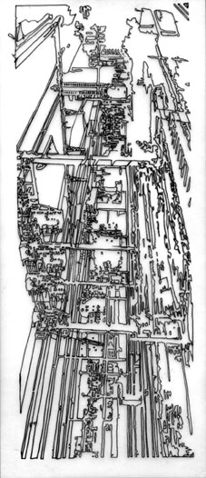
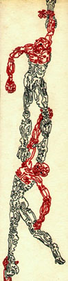
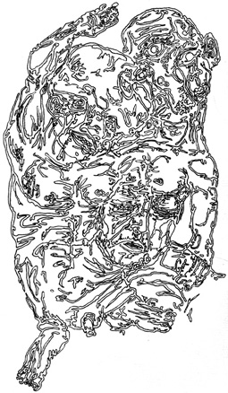
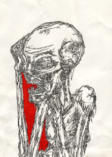

|


|
« L'Humanité gémit,
à demi écrasée, sous le poids des
progrès qu'elle a faits. Elle ne sait pas assez que
son avenir dépend d'elle. À elle de voir
d'abord si elle veut continuer à vivre. À elle
de se demander ensuite si elle veut vivre seulement, ou
fournir en outre l'effort nécessaire pour que
s'accomplisse, jusque sur notre planète
réfractaire, la fontion essentielle de l'Univers, qui
est une machine à faire des dieux.
»
H. Bergson.


|